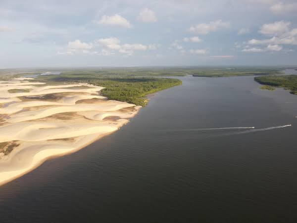
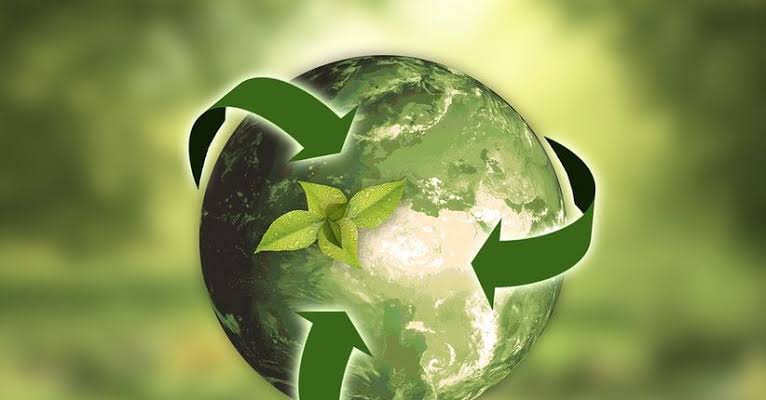

Educaçao Ambiental
Aprenda sobre a importância da educação ambiental
Visão geral
Neste curso, você aprenderá sobre os principais conceitos e práticas da Educação Ambiental, entendendo a importância de preservar o meio ambiente e de adotar uma postura sustentável.
Serão abordados temas como desenvolvimento sustentável, conservação da biodiversidade, reciclagem, energias renováveis, entre outros.
Ao final do curso, você estará apto a contribuir para a construção de um futuro mais sustentável.
O que é Educação Ambiental?
A Educação Ambiental é um campo de estudo que visa promover a conscientização e a compreensão dos problemas e desafios ambientais, buscando soluções e ações que promovam a sustentabilidade e o respeito ao meio ambiente.
É uma disciplina que abrange diversos aspectos, como a conservação dos recursos naturais, a preservação da biodiversidade, a promoção da saúde ambiental e o desenvolvimento sustentável.
Por que a Educação Ambiental é importante?
A Educação Ambiental desempenha um papel fundamental na formação de cidadãos conscientes e responsáveis.
Ela tem o poder de transformar atitudes e comportamentos, estimulando a participação ativa da sociedade na busca de soluções para os desafios ambientais que enfrentamos atualmente.
Além disso, a Educação Ambiental contribui para a preservação e conservação do meio ambiente, promovendo a utilização sustentável dos recursos naturais e a proteção da biodiversidade.
Ela também busca construir uma sociedade mais justa e equitativa, na qual todos tenham acesso a um ambiente saudável e de qualidade.
Princípios da Educação Ambiental
A Educação Ambiental se baseia em alguns princípios fundamentais, que norteiam sua prática e abordagem.
Entre esses princípios, destacam-se:
A Educação Ambiental busca integrar diferentes áreas do conhecimento, como ciências, humanidades e tecnologia, de modo a compreender e abordar a complexidade dos problemas ambientais.
A participação da comunidade é essencial para o processo de Educação Ambiental.
Ela deve ser ativa e engajada, possibilitando a troca de experiências, conhecimentos e perspectivas entre os diferentes atores envolvidos.
A Educação Ambiental deve ser contextualizada, relacionando os temas ambientais com a realidade e os desafios locais, de forma a tornar o aprendizado mais significativo e aplicável.
A Educação Ambiental não se restringe apenas ao aprendizado teórico, mas busca estimular a ação e o engajamento da comunidade em projetos e atividades práticas que promovam a sustenbilidade e a conservação ambiental.
Abordagens da Educação Ambiental
Existem diferentes abordagens da Educação Ambiental, cada uma com sua ênfase e forma de atuação.
Alguns exemplos são:
A Educação Ambiental pode ser integrada ao currículo escolar, sendo ensinada nas escolas de forma sistemática e planejada.
Nesse contexto, os estudantes têm a oportunidade de aprender sobre temas ambientais por meio de aulas teóricas, atividades práticas e projetos de pesquisa.
A Educação Ambiental também pode ocorrer fora do ambiente escolar, por meio de organizações não governamentais, instituições culturais, parques ecológicos, entre outros.
Essa abordagem permite uma maior flexibilidade e diversidade de atividades, como trilhas interpretativas, oficinas, palestras e campanhas educativas.
A Educação Ambiental pode ser realizada de maneira informal, por meio de experiências vivenciais e cotidianas.
Isso inclui práticas individuais, como o uso consciente dos recursos naturais, a separação correta dos resíduos e a conservação do meio ambiente, bem como a influência de fatores externos, como filmes, documentários e notícias relacionadas ao meio ambiente.
Conclusão - Introdução à Educação Ambiental
A Educação Ambiental é fundamental para conscientizar e engajar as pessoas na proteção do meio ambiente.
Neste curso, você aprendeu os conceitos básicos da Educação Ambiental e sua importância na conservação e preservação ambiental.
Além disso, exploramos as políticas públicas relacionadas à Educação Ambiental e como elas contribuem para uma sociedade mais sustentável.
Conservação e Preservação Ambiental
Conservação e Preservação Ambiental
A conservação e preservação ambiental são duas abordagens essenciais para garantir o equilíbrio e a saúde dos ecossistemas.
Embora esses termos sejam frequentemente usados de forma intercambiável, eles se referem a conceitos distintos.
Neste tópico, exploraremos a importância da conservação e preservação ambiental, seus princípios fundamentais e as ações necessárias para sua implementação.
Conservação Ambiental
A conservação ambiental envolve atividades destinadas a proteger, gerir e restaurar a biodiversidade e os recursos naturais existentes em um determinado local.
Seu objetivo principal é promover o uso sustentável dos recursos e minimizar o impacto humano sobre o meio ambiente.
Existem diferentes abordagens para a conservação ambiental.
Alguns exemplos incluem:
A conservação ambiental é fundamental para garantir a disponibilidade contínua de recursos naturais, como a água potável, o solo fértil e os alimentos.
Além disso, contribui para a manutenção da diversidade biológica e dos serviços ecossistêmicos, como a polinização de culturas e a regulação do clima.
Preservação Ambiental
A preservação ambiental, por outro lado, é uma abordagem mais restritiva.
Ela busca manter os ecossistemas e seus componentes em um estado intocado, sem intervenção humana significativa.
A preservação é muitas vezes associada à proteção de áreas naturais intocadas, como florestas primárias, rios não poluídos e recifes de corais.
Ao contrário da conservação, que permite a utilização sustentável dos recursos naturais, a preservação procura manter a natureza selvagem e intocada em sua forma original.
As áreas protegidas para preservação são essenciais para manter a biodiversidade, especialmente de espécies sensíveis e raras, e para preservar a herança natural e cultural de uma região.
Ações para Conservação e Preservação
 Embora a conservação e a preservação sejam conceitos distintos, muitas vezes trabalham em conjunto para garantir a sustentabilidade ambiental.
Algumas das ações necessárias para implementar essas abordagens incluem:
Promover a conscientização sobre a importância da conservação e preservação ambiental, bem como os impactos destrutivos das atividades humanas.
Desenvolver planos de gestão ambiental que considerem a proteção e uso sustentável dos recursos naturais em longo prazo.
Realizar atividades de monitoramento para avaliar a saúde dos ecossistemas e a eficácia das medidas de conservação e preservação, além de fiscalizar o cumprimento da legislação ambiental.
Promover o uso sustentável dos recursos naturais, incentivando práticas economicamente viáveis, socialmente justas e ambientalmente corretas.
Encorajar a participação ativa da comunidade local, de organizações não-governamentais e de outros setores da sociedade civil na conservação e preservação ambiental.
Ao implementar essas ações, é possível promover uma harmoniosa relação entre o ser humano e o meio ambiente, assegurando um futuro mais sustentável para as gerações presentes e futuras.
Este tópico fornece uma visão geral da conservação e preservação ambiental, seus princípios e ações necessárias para sua implementação.
Continue seu estudo para aprofundar-se em aspectos específicos, como a importância da biodiversidade e a interação entre o ambiente natural e as atividades humanas.
Conclusão - Conservação e Preservação Ambiental
O conhecimento sobre conservação e preservação ambiental é essencial para garantir a sobrevivência e o equilíbrio dos ecossistemas.
Durante este curso, você estudou as principais técnicas e estratégias utilizadas na conservação e preservação ambiental, bem como a importância de reduzir o consumo de recursos naturais e a adoção de práticas sustentáveis.
Políticas Públicas e Educação Ambiental
Introdução
As Políticas Públicas e a Educação Ambiental são áreas que se complementam e têm um papel crucial na busca por um desenvolvimento sustentável e na preservação do meio ambiente.
Neste tópico, iremos explorar a relação entre esses dois campos e analisar como as políticas públicas podem promover a educação ambiental e contribuir para uma mudança de consciência e comportamento em relação ao meio ambiente.
O que são Políticas Públicas?
Políticas Públicas são diretrizes e ações adotadas pelo governo para solucionar problemas e atender às necessidades da sociedade como um todo.
Elas envolvem a formulação e implementação de programas e planos de ação que têm o objetivo de criar condições favoráveis para o desenvolvimento de determinada área ou setor.
A importância das Políticas Públicas na Educação Ambiental
As Políticas Públicas desempenham um papel fundamental na Educação Ambiental ao estabelecerem diretrizes e metas para a incorporação dessa temática nos currículos escolares, na formação de professores e na implementação de programas e projetos educacionais.Além disso, as Políticas Públicas podem contribuir para a criação de espaços de debate e participação da comunidade, promovendo a inclusão de diferentes atores sociais na construção de soluções e no fortalecimento das práticas de Educação Ambiental.
Exemplos de Políticas Públicas na Educação Ambiental
Existem diversos exemplos de Políticas Públicas que têm como foco a Educação Ambiental.
Um deles é o Programa Nacional de Educação Ambiental (ProNEA), que estabelece diretrizes para a implementação da Educação Ambiental em todos os níveis e modalidades de ensino no Brasil.
Outro exemplo é a Política Nacional de Resíduos Sólidos, que estabelece diretrizes para a gestão integrada de resíduos sólidos e promove a inclusão da Educação Ambiental como um dos instrumentos para conscientização e mudança de comportamento em relação ao consumo e descarte adequado dos resíduos.
Desafios e oportunidades
Apesar da importância das Políticas Públicas na Educação Ambiental, ainda existem desafios a serem enfrentados.
Um deles é a falta de integração entre as diferentes áreas governamentais e entre os diferentes níveis de governo na implementação dessas políticas.
Outro desafio é a necessidade de garantir a participação efetiva da sociedade civil na formulação e acompanhamento das Políticas Públicas, assegurando que as estratégias adotadas sejam eficazes e representem os interesses e demandas da população.
No entanto, esses desafios também representam oportunidades de melhoria e aprimoramento das Políticas Públicas, através da promoção do diálogo e da participação social, visando alcançar resultados mais efetivos na Educação Ambiental.
Conclusão - Políticas Públicas e Educação Ambiental
As políticas públicas desempenham um papel fundamental na promoção da Educação Ambiental.
Neste curso, você explorou as principais políticas públicas relacionadas à Educação Ambiental, como a implementação de programas de educação ambiental nas escolas e a criação de áreas de conservação.
Compreender essas políticas é essencial para contribuir para um futuro mais sustentável.
Exercícios Práticos
Vamos colocar os seus conhecimentos em prática
Nesta lição, colocaremos a teoria em prática por meio de atividades práticas.
Clique nos itens abaixo para conferir cada exercício e desenvolver habilidades práticas que o ajudarão a ter sucesso na disciplina.
Além disso, devem exemplificar cada um dos conceitos com situações do cotidiano.
Eles devem identificar quais são os principais impactos negativos e propor alternativas de conservação e preservação.
Eles devem identificar os objetivos da política, analisar se ela está alinhada com os princípios da Educação Ambiental e discutir possíveis melhorias que poderiam ser feitas.
Resumo
Vamos rever o que acabamos de ver até agora
A Educação Ambiental é fundamental para conscientizar e engajar as pessoas na proteção do meio ambiente.
Neste curso, você aprendeu os conceitos básicos da Educação Ambiental e sua importância na conservação e preservação ambiental.
Além disso, exploramos as políticas públicas relacionadas à Educação Ambiental e como elas contribuem para uma sociedade mais sustentável.
O conhecimento sobre conservação e preservação ambiental é essencial para garantir a sobrevivência e o equilíbrio dos ecossistemas.
Durante este curso, você estudou as principais técnicas e estratégias utilizadas na conservação e preservação ambiental, bem como a importância de reduzir o consumo de recursos naturais e a adoção de práticas sustentáveis.
As políticas públicas desempenham um papel fundamental na promoção da Educação Ambiental. Neste curso, você explorou as principais políticas públicas relacionadas à Educação Ambiental, como a implementação de programas de educação ambiental nas escolas e a criação de áreas de conservação.
Compreender essas políticas é essencial para contribuir para um futuro mais sustentável.
Questionário
Verifique o seu conhecimento respondendo a algumas perguntas
Qual é a diferença entre conservação e preservação ambiental?
Qual é o objetivo da educação ambiental?
Quais são os princípios da educação ambiental?
O que é conservação ambiental?
Quais são as principais políticas públicas relacionadas à educação ambiental?
O que é educação ambiental formal?